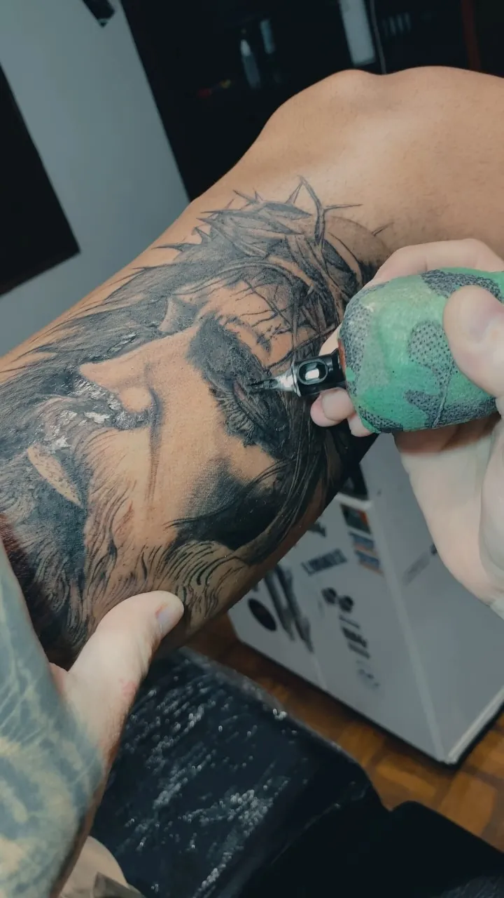

Fineline
Ver todosTraço fino e delicado: letterings, flores, símbolos pequenos e composições leves.
Agenda aberta
Tatuagem delicada em fineline e realismo em preto e branco. Capão Bonito, SP, desde 2020.

Portfólio
Fotos dos trabalhos feitos pelo Andre. Toque numa foto para ampliar.
Estilos
Os dois estilos que o Andre tatua: do traço fino ao degradê de cinza.

Sobre
Tatuador em Capão Bonito, no interior de São Paulo, desde 2020. Trabalha com fineline delicado e com realismo em preto e branco.
Agendamento
Valores e sinal: a preencher
Pelo formulário ou direto na DM: o que quer tatuar, onde no corpo e o tamanho aproximado. Fotos de referência ajudam.
O Andre responde com o valor e os horários livres na agenda.
No dia marcado, a tattoo é feita no estúdio em Capão Bonito.
Capão Bonito · SP
Peça o orçamento pelo formulário ou direto na DM do Instagram.